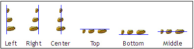

You can align components relative to one another. Components are aligned relative to the last component selected. The following diagram shows the various types of alignment:

To align components:
In the Visual Designer, hold down the Shift key and select the components to align.
Right-click the last component selected and choose Align >
alignment-command.